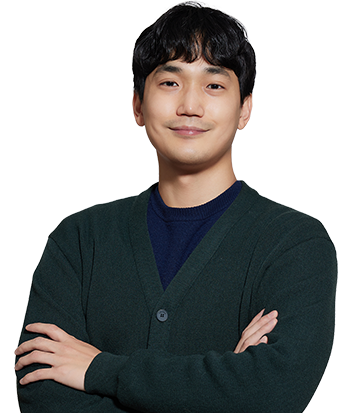

개발 의도를 소비자에게 전하는 일
HMR 제품개발
전형석

Q1. 어떤 업무를 담당하고 계신가요? 하루 일과와 함께 소개해 주세요.
안녕하세요. 롯데중앙연구소에서 HMR 제품 개발을 담당하고 있는 전형석 입니다.
간편하지만, 누구나 쉽게 집에서 chef가 될 수 있는 HMR 제품을 만드는 것이 저의 역할이라고 할 수 있습니다. 전자레인지 조리만으로 먹을 수 있는 상온면, 냉동면뿐 아니라 밀키트 등 다양한 제품을 개발하고 있습니다.
제 하루 일과는 개발하고 있는 제품들의 스케줄과 방향성을 확인하는 것으로 시작합니다. 빠른 시장 변화에 대응하기 위해 개발 스케줄 관리를 하고, 자사 및 타사 제품 분석을 기반으로 한 개발 방향을 설정합니다. 제품의 Key Base를 바탕으로 필요한 원료 수배, 배합 및 공정 설계 등의 과정을 거쳐 여러 타입의 시제품을 제작합니다. 이후 동료 연구원들과 함께 관능 평가를 진행합니다. 이렇게 진행한 개발 내용을 정리하고, 개선 방안을 도출하면서 하루를 마무리합니다.
간편하지만, 누구나 쉽게 집에서 chef가 될 수 있는 HMR 제품을 만드는 것이 저의 역할이라고 할 수 있습니다. 전자레인지 조리만으로 먹을 수 있는 상온면, 냉동면뿐 아니라 밀키트 등 다양한 제품을 개발하고 있습니다.
제 하루 일과는 개발하고 있는 제품들의 스케줄과 방향성을 확인하는 것으로 시작합니다. 빠른 시장 변화에 대응하기 위해 개발 스케줄 관리를 하고, 자사 및 타사 제품 분석을 기반으로 한 개발 방향을 설정합니다. 제품의 Key Base를 바탕으로 필요한 원료 수배, 배합 및 공정 설계 등의 과정을 거쳐 여러 타입의 시제품을 제작합니다. 이후 동료 연구원들과 함께 관능 평가를 진행합니다. 이렇게 진행한 개발 내용을 정리하고, 개선 방안을 도출하면서 하루를 마무리합니다.
Q2. 담당 업무에 필요한 역량은 무엇이고, 그 역량을 기르기 위해 어떤 노력을 하셨나요?
HMR 제품 개발을 위해서는 크게 2가지 역량이 필요합니다.
첫 번째는 문제를 발견하고 해결하는 능력입니다. HMR 제품은 그 어떤 제품보다 제품 카테고리와 소재가 무한하고, 환경(생산, 유통, 보관) 변수가 존재합니다. 이 모든 것을 사전에 대응하고 준비하기는 어렵습니다. 개발 의도와 실제 구현한 제품의 차이가 발생했을 때, 가장 중요한 것은 빠르게 문제의 원인을 찾고 해결하기 위한 방안을 찾는 것입니다.
이를 위해 제 관심분야 외에도 다양한 경험을 하고자 했던 태도가 도움이 됐습니다. 대학교, 대학원 때 전공과 관련 없는 활동 및 프로젝트라도 적극적으로 참여하고 다양한 경험을 쌓으려고 노력했습니다. 특정 상황이 발생했을 때 과거의 경험을 토대로 많은 문제를 해결할 수 있기 때문입니다. 앞으로도 미개척 분야에 적극적으로 도전하며 다양한 경험을 쌓고자 합니다.
두 번째는 지속적인 학습 의지 입니다. 안전하면서도 고품질의 제품을 구현하기 위해서는 다양한 전문 지식이 필요합니다. HMR 분야는 식품 미생물, 공학, 가공학 등 식품 전공 지식은 물론 육류, 수산물, 야채 등의 원료와 그에 대한 조리법과 음식 등 지식의 범위가 어떤 산업보다 넓습니다. 때문에 꾸준히 학습하고 역량을 쌓아 내실을 다지는 것이 중요하다고 생각합니다. 이를 위해 저는 과거 직접 정리했던 자료나 식품 및 마케팅 관련 서적을 꾸준히 읽고 있습니다. 시간이 지나도 필요할 때 원하는 정보를 찾을 수 있도록 준비 해왔기 때문에, 문제가 발생했을 때 해결 방법을 보다 빨리 찾을 수 있었습니다. 앞으로도 제 역할을 제품 개발에 한정하기보다는, 관련 내용을 찾고 확장해 공부하면서 넓은 분야의 전문 지식을 가진 연구원이 되기 위해 노력하려고 합니다.
첫 번째는 문제를 발견하고 해결하는 능력입니다. HMR 제품은 그 어떤 제품보다 제품 카테고리와 소재가 무한하고, 환경(생산, 유통, 보관) 변수가 존재합니다. 이 모든 것을 사전에 대응하고 준비하기는 어렵습니다. 개발 의도와 실제 구현한 제품의 차이가 발생했을 때, 가장 중요한 것은 빠르게 문제의 원인을 찾고 해결하기 위한 방안을 찾는 것입니다.
이를 위해 제 관심분야 외에도 다양한 경험을 하고자 했던 태도가 도움이 됐습니다. 대학교, 대학원 때 전공과 관련 없는 활동 및 프로젝트라도 적극적으로 참여하고 다양한 경험을 쌓으려고 노력했습니다. 특정 상황이 발생했을 때 과거의 경험을 토대로 많은 문제를 해결할 수 있기 때문입니다. 앞으로도 미개척 분야에 적극적으로 도전하며 다양한 경험을 쌓고자 합니다.
두 번째는 지속적인 학습 의지 입니다. 안전하면서도 고품질의 제품을 구현하기 위해서는 다양한 전문 지식이 필요합니다. HMR 분야는 식품 미생물, 공학, 가공학 등 식품 전공 지식은 물론 육류, 수산물, 야채 등의 원료와 그에 대한 조리법과 음식 등 지식의 범위가 어떤 산업보다 넓습니다. 때문에 꾸준히 학습하고 역량을 쌓아 내실을 다지는 것이 중요하다고 생각합니다. 이를 위해 저는 과거 직접 정리했던 자료나 식품 및 마케팅 관련 서적을 꾸준히 읽고 있습니다. 시간이 지나도 필요할 때 원하는 정보를 찾을 수 있도록 준비 해왔기 때문에, 문제가 발생했을 때 해결 방법을 보다 빨리 찾을 수 있었습니다. 앞으로도 제 역할을 제품 개발에 한정하기보다는, 관련 내용을 찾고 확장해 공부하면서 넓은 분야의 전문 지식을 가진 연구원이 되기 위해 노력하려고 합니다.
Q3. 일을 하면서 보람과 뿌듯함을 느낄 때는 언제인가요?
개발 당시 제품을 통해 전달하고자 했던 메시지가 소비자에게 전달됐다고 느꼈을 때 보람과 뿌듯함을 느낍니다. 물론 개발한 신제품이 오프라인, 온라인에 입점하고 긍정적인 리뷰를 보았을 때도 보람을 느끼지만, 연구원에게는 제품을 통해 전달하고자 하는 개발 의도가 가장 중요하다고 생각합니다. 연구개발은 소비자의 숨은 니즈 파악으로 시작합니다. 소비자의 니즈를 담아 제품 컨셉을 설정하고, 그것을 구현하기 위해 수많은 원료 탐색, 배합 테스트, 공정 구현 등의 과정을 진행합니다. 이때 소비자적 관점에서 고민하고 개발 의도를 제품에 담아 구현하는 것이 중요합니다. 개발 의도는 일반적으로 무형의 것(편리성, 맛, 향, 푸짐함, 가성비 등)이기 때문에 전달하기 위해서는 많은 노력이 필요합니다. 편리성 증대를 위한 제품이라면 실제 소비자가 더 편리하다고 느낄 수 있어야 하고, 특정 맛을 구현했다면 소비자 역시 그 맛을 느낄 수 있어야 합니다. 이렇게 제품에 담은 개발 의도가 소비자의 주된 구매 이유로 나타날 때, 개발 과정이 잘못되지 않았고 소비자 만족이라는 가치로 전달됐다는 것에 연구원으로써 큰 보람을 느낍니다.
Q4. 롯데중앙연구소 입사를 결심하게 된 이유는 무엇인가요? 입사하길 잘했다고 느끼는 순간이 있다면요?
입사 전 인간의 생애주기에 이로운 영향을 미치는 연구를 하고 싶다는 목표를 가지고 있었습니다. 실제로 대학원에서도 그와 같은 연구를 진행했었고, 직무 또한 이와 연결하고자 했습니다. 롯데중앙연구소는 제과, 음료, 푸드, 외식, 주류, 기초, 안전 등 모든 식품 생애주기의 집합체로서 이곳에서 성장하며 성과 창출을 해나간다면 세웠던 목표를 달성할 수 있다고 생각해 입사했습니다. 롯데중앙연구소가 생애주기의 집합체라면, 롯데그룹은 식품 산업 외에도 유통, 화학, 호텔 등 라이프스타일의 집합체라고 생각합니다. 실제로 개발한 제품이 유통사 협업을 통해 마트, 슈퍼, 세븐일레븐, 롯데리아 등으로 뻗어 나가기도 하고, 호텔 관련 프리미엄 이색 제품, 롯데시네마 관련 소스를 개발하기도 합니다. 생애주기는 물론 라이프스타일까지 확장되는 연구개발 환경 속에서 느껴지는 내면의 성장을 할 때 입사하길 잘했다고 느낍니다. 또한 이런 업무 환경을 서울에서 즐길 수 있다는 점과, 워라밸 또한 뛰어난 조직문화 등을 통해 자연스레 애사심을 가질 수 있었습니다.